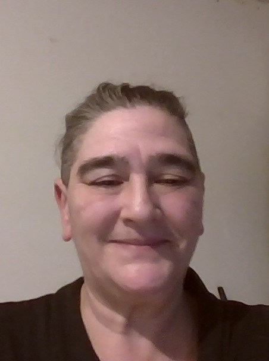

I've been around the country to different areas. I'm a 53 year old ASU student studying Human Services Engineering (User Experience). I am married to a wonderful man. I've been blessed to have been with married to him for 32 years.I am currently the foster of 2 boys under 2 who keep me going. I have 1 grown son who has blessed me with 2 beautiful granddaughters.
If I don't know it, I'll find out. And if I can't do it, I'll learn. This mindset has guided me through every chapter of my life—from mastering new instruments to tackling complex technical work, and now pursuing higher education. Life is too short not to grow, evolve, and embrace new challenges.
I'm pursuing a degree in Human Services Engineering (User Experience) at Arizona State University—a lifelong goal I'm finally fulfilling.
This journey is deeply personal. I'm pursuing my degree in honor of my mom's courageous battle with ovarian cancer and my own health journey with endometriosis. These experiences taught me that life is precious and meant to be lived fully. Through UX design, I hope to make a difference in others' lives and show my family—especially my granddaughters—that it's never too late to chase your goals and reinvent yourself.
This app was created to assist a user in finding the most suitable skincare routine and products based on their individual needs and preferences.
View ProjectI was inspired to create this app after becoming a foster parent and realizing the need for a reliable communication tool to connect with other foster families with the toddler who might be traumatized and / or unable to express their feelings.
View ProjectMusic Background: I'm a classically trained musician who primarily plays violin, but I'm also proficient on viola, clarinet, alto clarinet, and timpani. As an expert sight reader, I was invited in 7th grade to perform with the 8th grade quartet—and I was the only musician that day to perform without a single mistake. This musical achievement earned me a scholarship to Santa Catalina School, a prestigious all-girls private academy.
Career & Expertise: Four years after recovering from multiple surgeries during the COVID-19 pandemic, I returned to the workforce with renewed determination. During my career in the bearings manufacturing industry, I became one of only three women in the company's history to master the setup and operation of precision machines handling components over 8 inches with ultra-high precision requirements. This accomplishment reflects not only my technical skill and dedication to breaking barriers in a traditionally male-dominated field, but also my resilience and ability to return stronger after facing significant health challenges.
Spirituality: I'm a spiritual person who practices witchcraft. While I don't follow traditional organized religion, I'm deeply connected to nature, intention-setting, and personal empowerment—which informs how I approach life and help others around me.
I'm also a TikTok creator sharing my journey, perspectives, and daily life with my community. Follow me for authentic content and real conversations about life, growth, and everything in between!
Follow @crankynana626 on TikTok